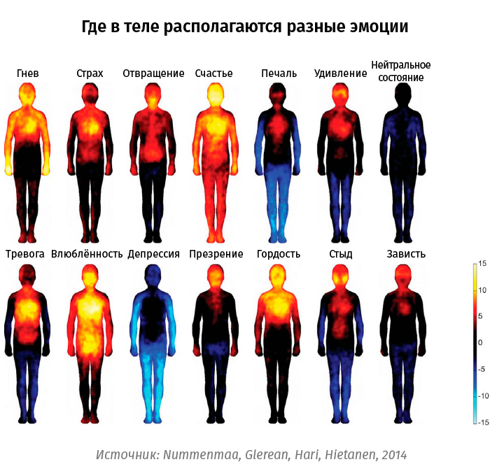

Как справляться со своими эмоциями
Сначала разберемся, как эмоции проявляются в теле, а затем вы освоите две техники, которые помогут вам взять эмоции под контроль.
Где в теле проявляются эмоции
Финские ученые протестировали 700 человек с целью выяснить, как люди проживают эмоции. Ученые вызывали у испытуемых эмоции и спрашивали, в каких частях тела возникают ощущения. Что выяснили ученые? Результат вы видите на картинке ниже. Чтобы интерпретировать картинку, опирайтесь на цвета. Желтый и красный – теплые ощущения. Синий – холодные.

Техники контроля сильных эмоций
Иногда эмоции так сильны, что разум отключается. В ступоре или в аффекте человеку сложно определить, что конкретно он сейчас чувствует и почему. И тогда уже не личность управляет эмоциями, а они – ей. Чтобы научиться справляться с сильными переживаниями, освойте две техники.
Техника 1. Как за четыре шага справиться с сильной эмоцией
Шаг 1. Определите эмоцию, с которой хотите справиться. Для этого наблюдайте за собой и отслеживайте, где в теле локализовано ощущение. Если вы увидели телесную реакцию, но не можете определить эмоцию, ориентируйтесь на тепловую карту с картинки в начале урока. Например, вы поняли, что злитесь. Возможно, вы заметите, как от злости у вас напрягаются плечи или скулы, сжимаются кулаки. Для начала просто зафиксируйте это.
Шаг 2. Постарайтесь расслабить напряженный участок тела. Если вы не умеете произвольно расслабляться, действуйте от обратного. Чтобы расслабить кулаки, сожмите их еще больше и резко отпустите. Напряжение в плечевом поясе можно снять противоположным движением. Допустим, вы разговариваете с коллегой и от раздражения немного наклоняете корпус вперед. В этом случае откиньтесь назад. Как только вы расслабите мышцы, раздражение утихнет: расслабленному телу трудно злиться.
Шаг 3. Во время раздражения дыхание учащается. Пока эмоции не утихнут, используйте растянутое дыхание: пять секунд на вдох, пять секунд на выдох. Дышите животом, мысленно представляйте, как воздух доходит до тазового дна.
Шаг 4. Дайте себе время успокоиться. Если от вас ждут мгновенную реакцию, скажите, что ответите позже. Заранее придумайте нейтральные фразы для разных ситуаций. Например: «Интересный вопрос», «Я не смотрел на эту ситуацию таким образом», «Я растерялся. Мне нужно время, чтобы подумать».
Техника 2. «Адреналиновый барометр»
Цель техники – научиться определять интенсивность эмоций, которые вы испытываете, чтобы быстрее возвращаться в спокойное состояние. Рассмотрим технику на примере злости с помощью бытовой ситуации – взаимодействие с продавцом в магазине.
Шкала показывает интенсивность эмоции от 1 до 10. Изучайте адреналиновый барометр снизу, с баллов 1 и 2, чтобы проследить, как нарастает злость. Нажмите на строку «спокойствие», и вы увидите, как злость проявляется на самом первом уровне.
Как только замечаете, что настроение меняется, ваша задача:
Остановиться и понять, что за эмоцию вы испытываете. В этом поможет тепловая карта из начала урока.
Определить её интенсивность. Например, вы злитесь, а насколько интенсивно по шкале от 1 до 10?
Вы определили, что злитесь на 3-4 балла. Прочувствуйте свое состояние: как реагирует тело, о чем вы думаете, что делаете. Например, верхняя часть тела горит, в мыслях – ругань, внутри тревожно, от этого вы не можете успокоиться и ходите по комнате. Запомните, как вы злитесь на 3-4 балла, чтобы в будущем вы смогли быстрее определить эмоцию.
Ваша цель – составить собственную карту эмоций, прочувствовать все их оттенки. Вы должны знать, как вы злитесь на 1-2 балла, как на 5, а как на 10. Это поможет отследить рубеж, после которого вы теряете контроль. У большинства людей переходная зона находится в пределах 3–5 баллов.
На 3-4 балла злость проявляется ощутимо, если ничего не предпринять, напряжение будет нарастать. Как только чувствуете, что отметка по шкале «Адреналинового барометра» ползет вверх:
По возможности выйдите из комнаты, чтобы отдалиться от раздражителя и спокойно разобраться, что сейчас со вами происходит.
Остановитесь, почувствуйте точки опоры: ступни и ягодицы – если сидите, только ступни – если стоите. Это переключит внимание с мыслей в тело и поможет прожить эмоцию.
Дышите медленно и глубоко, чтобы замедлиться. В конце урока вы найдете описания приложений для телефона с дыхательными практиками.
Если уже определили эмоцию, проговорите её внутри себя: «Я злюсь, потому что…», «Я боюсь, что…» и тд. Так вы не убегаете от эмоции, а принимаете её и позволяете себе проживать.
Побудьте со своими переживаниями столько, сколько вам нужно. При интенсивности эмоций 3-4 балла, вы успокоитесь через 5-10 минут. При 8 баллах может потребоваться 20 минут. Если у вас нет 20 свободных минут, даже 5 минут глубокого дыхания помогут вам снизить эмоциональный накал.
Вы изучили две техники, которые помогут справиться с сильными эмоциями. Чтобы закрепить материал, ответьте на вопрос лектора.
Приложения с дыхательными практиками
The Breathing App – практика резонансного дыхания. Суть этой техники в том, что в течение одной минуты вы делаете от 5 до 7 вдохов и выдохов. Когда шар в приложении увеличивается, вы вдыхаете воздух, когда сужается – выдыхаете. При желании закройте глаза: на выдохе приложение подаст звуковой сигнал. Доступно для Android и IOS.
Siberian Breath – приложение для медитаций, дыхательных практик и сна на фоне пейзажей и звуков сибирской природы. Выберите пейзаж, технику дыхания, время предстоящей практики и нажмите старт. Приложение подскажет вам интервалы вдоха и выдоха. Доступно для IOS.